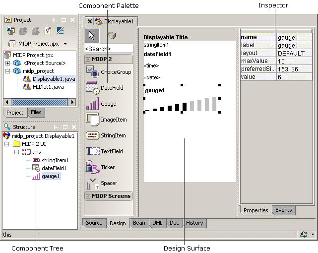

This is a feature of JBuilder Developer, JBuilder Enterprise, and JBuilder Mobile Edition
Mobile development is fully integrated into JBuilder for building and deploying J2ME applications using MIDP and CLDC. JBuilder includes visual design tools for creating mobile applications, device emulation and debugging, as well as incorporating all the standard features offered with JBuilder. Support for Over the Air (OTA) provisioning is available for JDKs that implement it.
JBuilder supports MIDP 2.x development through the Wireless Toolkit. Many third party MIDP SDKs support the Unified Emulator Interface (UEI). These may also be used with JBuilder.

For more information, see:
Developing Mobile Applications: Introduction